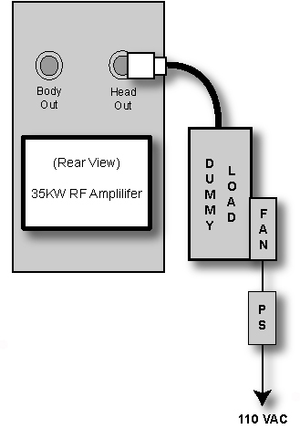

| NOTE: | If the RF Max Power Out procedure was just completed, configuration is the same. Leave the Body RF Heliax Cable disconnected, and the head output can keep the coupler (1.5T) and wattmeter (3.0T) in line. It will not change the outcome of the calibration. |
Illustration 8: Setup for Head Output Measurement
